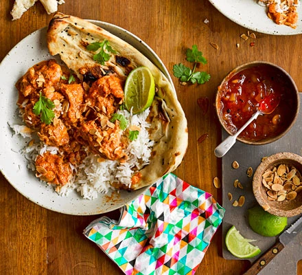

Butter Chicken Recipe
Go back.

Description:
This is a delightful butter chicken dish that is served with a splendid curry and can be coupled with either naan or rice.
Ingredients
- 500g bonesless chicken thighs
- Paprika
- Lemon
- Hot chilli powder
- Natural yoghurt
- Vegetable Oil
- Onion
- Garlic Cloves
- Chicken Stock
Steps:
- In a medium bowl, mix all the marinade ingredients with some seasoning. Chop the chicken into bite-sized pieces and toss with the marinade. Cover and chill in the fridge for 1 hr or overnight.
- In a large, heavy saucepan, heat the oil. Add the onion, garlic, green chilli, ginger and some seasoning. Fry on a medium heat for 10 mins or until soft.
- Add the spices with the tomato purée, cook for a further 2 mins until fragrant, then add the stock and marinated chicken. Cook for 15 mins, then add any remaining marinade left in the bowl. Simmer for 5 mins, then sprinkle with the toasted almonds. Serve with rice, naan bread, chutney, coriander and lime wedges, if you like.